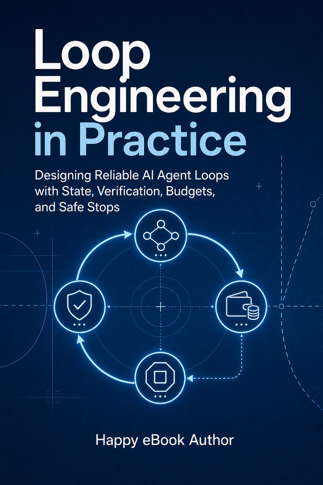

Loop Engineering in Practice
Designing Reliable AI Agent Loops with State, Verification, Budgets, and Safe Stops

Loop Engineering in Practice
Designing Reliable AI Agent Loops with State, Verification, Budgets, and Safe Stops
Reliable AI work takes more than a strong prompt. It requires an outer loop that can discover work, preserve state, verify evidence, control retries, respect budgets, and stop safely. Loop Engineering in Practice is a hands-on guide to designing dependable AI agent workflows. It explains how to define triggers, goals, context, actions, observations, verifiers, state, budgets, and stop rules as an inspectable operating contract. The book then shows how these components work together across automation, worktrees and sandboxes, multi-agent delegation, connectors, human approval gates, and failure recovery. Readers will learn how to turn repeated AI tasks into explicit, resumable loops; separate completion claims from independent verification; design retry, fallback, circuit-breaker, and safe-stop behavior; preserve durable state outside the conversation; constrain token, time, cost, and tool permissions; coordinate subagents without losing evidence or accountability; and keep high-impact decisions under human control. Templates, checklists, budget sheets, resilience worksheets, and tool-neutral examples make the methods directly reusable. Written for advanced AI users, developers, technical leads, and automation designers, this book provides a practical framework for making agentic work repeatable, auditable, and controllable.
作品介紹；目前未提供購買或試閱入口